MUTSU, AOMORI
コーヒー通り21
住宅街の二階で、焙煎機のそばで、一杯ずつ手で淹れる。むつ市緑町の小さな喫茶室です。
※このページは営業用の試作サンプルです。
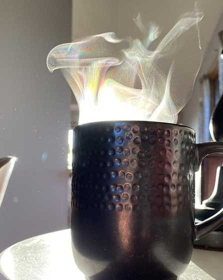
お店のこと
コーヒー通り21は、青森県むつ市緑町、閑静な住宅街の建物の二階にある喫茶です。店内には焙煎機があり、メニューには「自家焙煎」と記されているそうです。
口コミなどでは、一杯ずつハンドドリップで淹れる珈琲や、手作りのクッキー・ケーキが紹介されています。Facebookページには、緑町へ移転した旨の投稿もあります。
お店の由来や店名の「21」の意味は、確認できていません。このページでは決めつけず、「珈琲を中心にした通り道のような場所」という制作側のイメージとして表現しています。
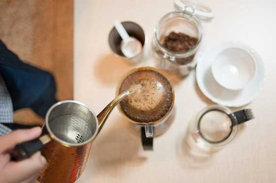
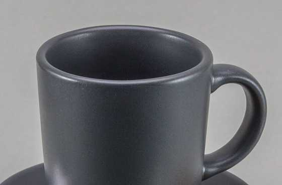
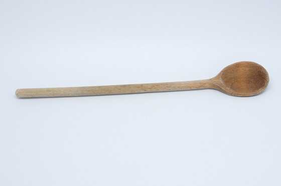
口コミ(イメージ例)
以下は制作側が作成したイメージ例で、実際のお客様の声ではありません。
イメージ例
階段を上がると、焙煎の香りがふわっと迎えてくれそうです。
イメージ例
手作りのクッキーと、ゆっくり淹れる珈琲の組み合わせを楽しみたいです。
イメージ例
静かな住宅街で、本を片手に過ごす時間が似合うお店だと思います。
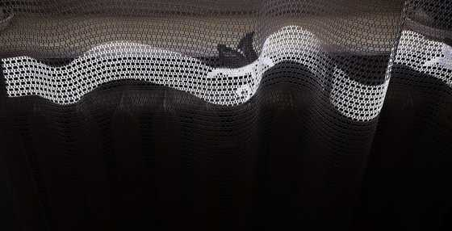
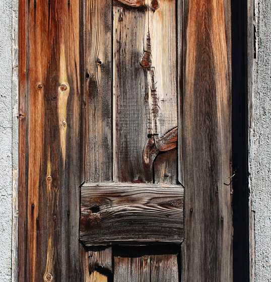
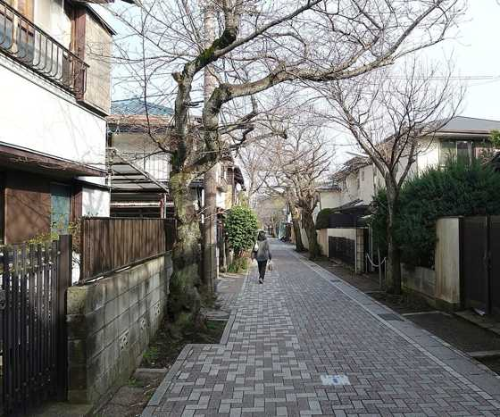
アクセス
- 住所
- 〒035-0053 青森県むつ市緑町18-36(建物の2階とされています)
- 電話
- 準備中
- 営業時間
- 準備中
- @ko_hi_doori21
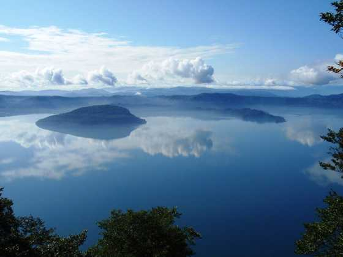
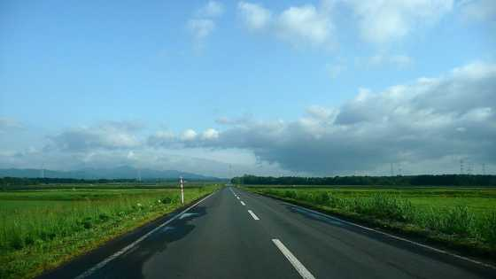
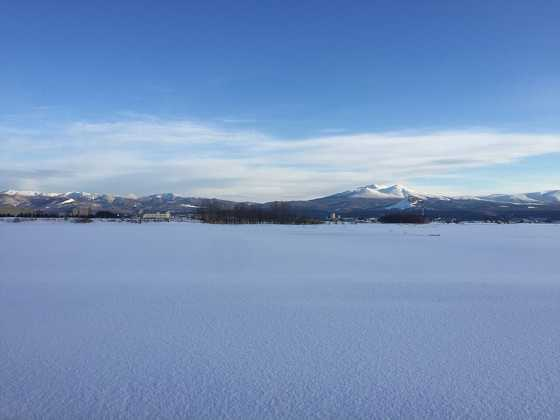
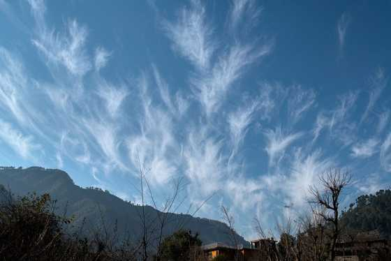